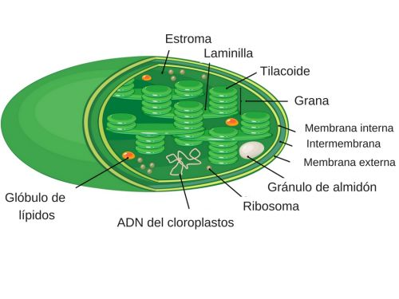

Los árboles, las plantas y demás especies vegetales forman parte del reino Plantae, uno de los más antiguos y que se caracteriza por su naturaleza inmóvil, pluricelular y eucariota. Estos seres autótrofos, que contienen celulosa y clorofila en sus células, son imprescindibles para la vida en la Tierra al liberar oxígeno a través de la fotosíntesis. En cuanto a la forma de reproducirse, esta puede ser de tipo sexual o asexual. NO hay un acuerdo entre los autores en la delimitación exacta de este reino.
Características

Una célula vegetal es el tipo de célula eucariota de la que están compuestos muchos tejidos vegetales. A menudo, es descrita con los rasgos de una célula del parénquima de una planta vascular. Pero sus características no pueden generalizarse con el resto de las células meristemáticas o adultas de una planta y menos aún a las de los muy diversos organismos imprecisamente llamados vegetales. Estas células por lo general poseen:
Los cloroplastos son las organelas de la célula vegetal responsables de que las plantas posean su característica principal: que sean organismos autótrofos (produzcan "su propio alimento" a partir de sustancias inorgánicas), ya que es dentro de los cloroplastos donde se realiza el proceso de fotosíntesis, que utiliza la energía de la luz del Sol para almacenarla en forma de energía química en las moléculas orgánicas. Las moléculas orgánicas se forman a partir de moléculas más pequeñas, inorgánicas, que se encuentran en el aire y el agua (el agua misma es una molécula inorgánica). Para "unir" las moléculas inorgánicas entre sí se necesita energía, que queda almacenada en esa unión (una unión se representa por un palito, como en C-C, la unión entre dos carbonos). Por eso se dice que las plantas "almacenan energía química" a partir de la energía de la luz del Sol, y por eso se dice que son organismos autótrofos, "que fabrican su propio alimento".
cloroplastos también son los responsables de que las plantas sean verdes, ya que la clorofila a, el pigmento responsable de captar la energía de la luz del Sol para que empiece la fotosíntesis, no puede aprovechar toda la luz del Sol como fuente de energía, solo puede utilizar la luz roja y la azul, siendo reflejada principalmente, de la luz visible, la luz verde. Al reflejar la luz verde, ese es el color que llega a nuestros ojos y el que observamos. Las plantas que poseen otros colores en sus partes fotosintéticas poseen además otros pigmentos que les dan color, pero si no los tuvieran serían verdes también.
El citoplasma, tiene diferentes funciones:
Una vacuola es un orgánulo celular presente en todas las células de plantas. Son compartimentos cerrados o limitados por una membrana plasmática llamada tonoplasto, contienen diferentes fluidos como agua o enzimas, aunque en algunos casos puede contener sólidos, por ejemplo azúcares, sales, proteínas y otros nutrientes. La mayoría de las vacuolas se forman por la fusión de múltiples vesículas membranosas. El orgánulo no posee una forma definida, su estructura varía según las necesidades de la célula en particular
El aparato de Golgi designa al conjunto de unos 80 dictiosomas de la célula. Estos dictiosomas están compuestos por 40 o 60 sáculos (cisternas) aplanados y rodeados de membrana que se encuentran apilados unos encima de otros, y cuya función es completar la fabricación de algunas proteínas.
Los ribosomas son complejos macromoleculares de proteínas y ácido ribonucleico (ARN) que se encuentran en el citoplasma, en las mitocondrias, en el retículo endoplasmático y en los cloroplastos.Los ribosomas son responsables de la síntesis de proteínas, en un proceso conocido como traducción. La información necesaria para esa síntesis se encuentra en el ARN mensajero (ARNm), cuya secuencia de nucleótidos, determina la secuencia de aminoácidos de la proteína. A su vez, la secuencia del ARNm proviene de la transcripción de un gen del ADN. El ARN de transferencia lleva los aminoácidos a los ribosomas donde se incorporan al polipéptido en crecimiento.
El retículo endoplasmático o endoplásmico es un orgánulo distribuido por todo el citoplasma celular de una célula eucariota, el cual se representa como un complejo sistema de membranas celulares dispuestas en forma de sacos aplanados y túbulos que están interconectados entre sí compartiendo el mismo espacio interno.
Las mitocondrias son orgánulos de gran tamaño, algunas llegan a medir 7 µm de largo y 1 µm de diámetro. Su vida media es de unos diez días a partir de los cuales se alarga y se parte en dos. Su función principal es la síntesis de ATP mediante el proceso conocido como fosforilación oxidativa
La membrana plasmática, membrana celular, membrana citoplasmática o plasmalema, es una bicapa lipídica que delimita toda la célula. Es una estructura formada por dos láminas de fosfolípidos, glucolípidos y proteínas que rodean, limitan la forma y contribuyen a mantener el equilibrio entre el interior (medio intracelular) y el exterior (medio extracelular) de las células. Regula la entrada y salida de muchas sustancias entre el citoplasma y el medio extracelular.
El citoplasma es la parte del protoplasma que, en una célula eucariota, se encuentra entre el núcleo celular y la membrana plasmática. Consiste en una dispersión coloidal muy fina de aspecto granuloso, el citosol o hialoplasma, y en una diversidad de orgánulos celulares que desempeñan diferentes funciones. Su función es albergar los orgánulos celulares y contribuir al movimiento de estos. El citosol es la sede de muchos de los procesos metabólicos que se dan en las células.
El núcleo celular es un orgánulo membranoso que se encuentra en el centro de las células eucariotas. Contiene la mayor parte del material genético celular, organizado en múltiples moléculas lineales de ADN de gran longitud formando complejos con una gran variedad de proteínas como las histonas para formar los cromosomas.El conjunto de genes de esos cromosomas se denomina genoma nuclear.La función del núcleo es mantener la integridad de esos genes y controlar las actividades celulares regulando la expresión génica. Por ello se dice que el núcleo es el centro de control de la célula.